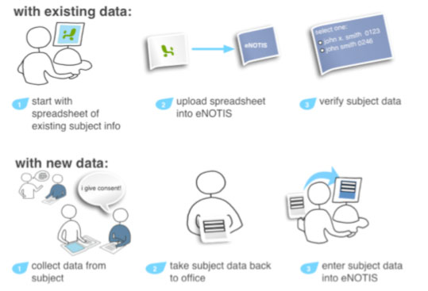

eNOTIS is the subject registration system for all IRB-approved
clinical research at Northwestern University
Measure
Developed in collaboration with the clinical research community
Add subjects to your study and track key clinical events: consent, withdrawal, completion
5,243 studies (and counting)
See
Visualize accrual for all your studies in one place
Print or export your enrollment for reports
eNOTIS meets recent FDA guidelines on electronic reporting and addresses a mandate that accrual information be tracked, validated and reported periodically to clinicaltrials.gov
Improve
Make informed decisions about your research
Ensure subject safety by verifying their participation in other trials
Spend less time entering and tracking data by hand: studies are pre-loaded from eIRB and subject identity verified via NU Enterprise Data Warehouse (EDW)
eNOTIS supports two methods of tracking subject accrual

Send your support requests to:
enotissupport@northwestern.edu
When will we need to use eNOTIS?
Interventional studies approved after June 1st, 2010 are required to enter accrual in eNOTIS. Current interventional studies will be required to enter accrual into eNOTIS after their next periodic review. eNOTIS has the ability to import existing subject lists in csv format.
What data will we need to enter?
Subject identity, NIH race and ethnicity, gender, consent and completion dates. Study information will come from the eIRB and will not require double entry.
Who will be able to accrue and view the list of subjects accrued on a study?
For each study, the IRB authorized PI, co-PI and coordinators will be able to view the identity of subjects accrued on a study. Any additional roles and responsibilities should be clarified with the IRB and represented in the eIRB.
When will eNOTIS reflect new and terminated personnel, as authorized personnel list revisions take time in eIRB?
The IRB is committed to providing expedited review and implementation of faculty and staff changes for any IRB study. The University has immediate termination of access procedures in place, including netID cutoffs synchronized with physical notification in cases of employee termination.
What information will eNOTIS show about subjects and other studies?
Each subject is represented once in eNOTIS. Users who have accrued a subject will be able to view all other studies a subject is accrued on.
What if my protocol requires confidential participation?
Participants may be identified by case number only, and their participation will not be seen by other eNOTIS users.
Is eNOTIS IRB approved? Will consent language need to be updated?
eNOTIS is IRB approved, and language that covers the use of eNOTIS is now part of the IRB consent template. If you use that template, you will not require any additional consent language. eNOTIS is a secure and centrally managed resource for data that is already being tracked by all groups engaged in clinical research.
What HIPAA or other security issues are raised by use of eNOTIS?
All subject identity searches in eNOTIS are logged. All eNOTIS users have CITI training, as validated by the IRB. We do not anticipate any additional security or HIPAA-related issues.